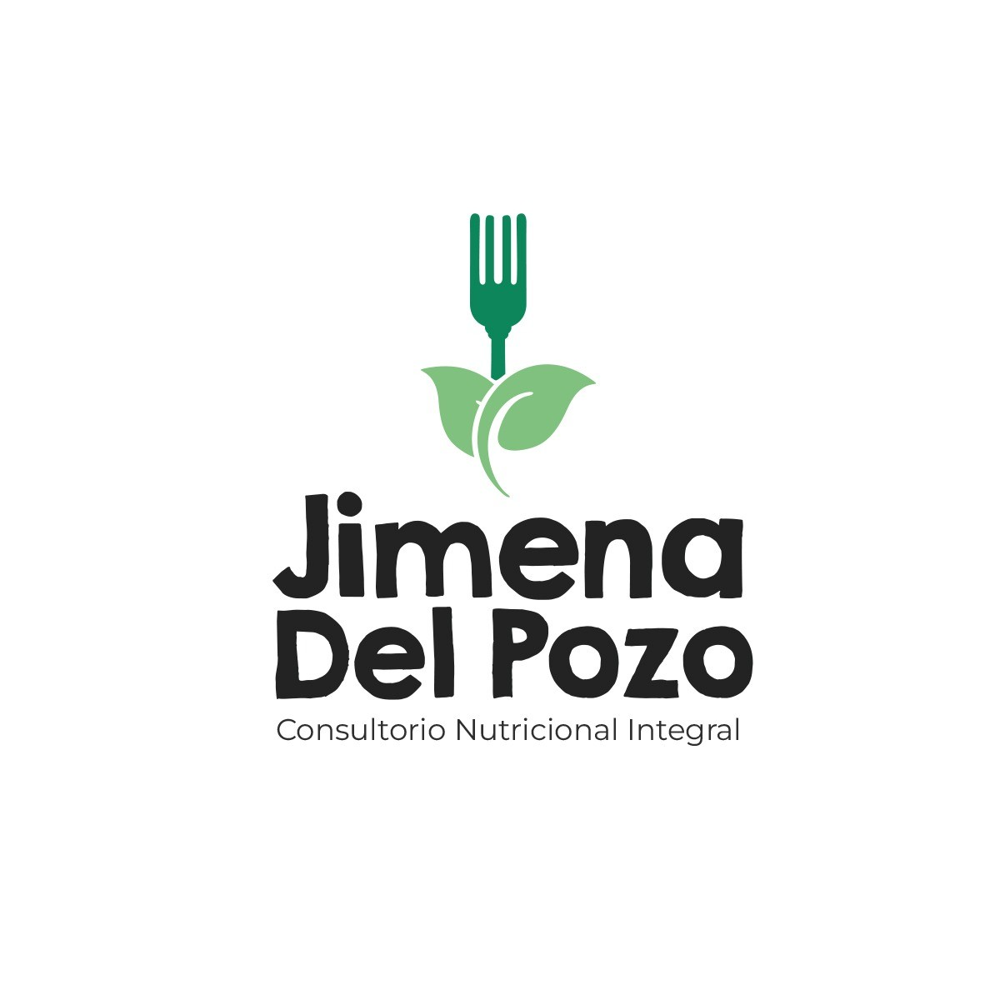

Jimena Del Pozo - MBA Portfolio
1 Jimena Del Pozo
1.0.1 MBA Candidate | Healthcare Business Leader | Strategic Innovator
1.1 About Me
I am a certified dietitian and MBA candidate with over five years of leadership experience managing medical centers in Peru. Currently pursuing my MBA in Canada, I am passionate about combining healthcare knowledge with business strategy, digital transformation, and innovation. My goal is to drive impactful improvements in health systems and business operations through strategic thinking, cross-cultural insight, and project management expertise.
1.2 Education
Master of Business Administration (MBA)
Sacred Heart Women’s University — Expected 2025
Relevant coursework: Strategic Management, AI in Business, Financial Analysis
Bachelor of Science in Nutrition
Sacred Heart Women’s University — Graduated 2010
Full five-year degree: clinical nutrition, management, sports and physiology
Specialist in Sports and Nutrition Science
Southern Scientific University — Graduated 2013
1.3 Certificates
- Food Service Level 1 — Completed 2025
- Certified Digital Marketing Associate — Completed 2025
- Introduction to JIRA — Completed February 2025
- Agile Scrum Foundation — Completed March 2025
- Introduction to Cloud Computing — Completed March 2025
1.4 Professional Experience
Deli Expert
Fresh Street Market – Canada | 2024–Present
- Ensured high standards of food quality, safety, and customer service
- Adapted quickly to the Canadian retail environment while managing MBA studies
- Contributed to operational efficiency and client satisfaction in a fast-paced setting
Medical Center Manager
Private Healthcare Clinics – Peru | 2016–2023
- Directed operations of two multidisciplinary health centers
- Managed HR, budgeting, and patient experience initiatives
- Led teams of healthcare professionals to improve care delivery and service quality
Mining Camp Nutritionist
Volcan Mine – Peru | 2016–2023
- Worked with kitchen staff, providing hygiene and food handling training
- Developed weekly menus for mining and admin staff, coordinated food orders
- Provided personalized dietary guidance for workers
1.5 Key Skills and Strengths
- Business & Strategy: Strategic Planning, Operations Management, Project Execution
- Analytics: Financial Analysis, Data Interpretation, Business Intelligence Tools
- Healthcare Leadership: Clinic Management, Nutrition Services, Patient Engagement
- Communication: Intercultural Communication, Bilingual (Spanish/English), Team Leadership
- Technology & Innovation: AI in Business, Digital Transformation, CRM Systems

1.6 Contact
📧 Email: jimena411@gmail.com
🔗 LinkedIn: linkedin.com/in/jimena-del-pozo-jacobs-6b976363
📱 Phone: 604-910-7369
📍 Location: North Vancouver, British Columbia, Canada